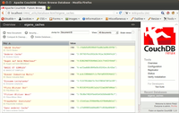
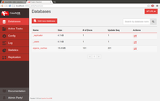
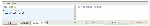

CouchDB
Dieser Artikel wurde für die folgenden Ubuntu-Versionen getestet:
Ubuntu 16.04 Xenial Xerus
Ubuntu 14.04 Trusty Tahr
Zum Verständnis dieses Artikels sind folgende Seiten hilfreich:
CouchDB  ist eine dokumenten-orientierte, webserver-basierte Datenbank. Im Gegensatz zu Relationalen Datenbanken wie MySQL oder PostgreSQL besteht bei dokumenten-orientierten Datenbanken kein Zwang für eine vordefinierte und feste Struktur, jedes Dokument kann (muss aber nicht) beliebige, verschiedene Felder haben. Die Feldlänge muss auch nicht vorab definiert werden. Dadurch eignen sich dokumenten-orientierte Datenbanken insbesonders für Texte.
ist eine dokumenten-orientierte, webserver-basierte Datenbank. Im Gegensatz zu Relationalen Datenbanken wie MySQL oder PostgreSQL besteht bei dokumenten-orientierten Datenbanken kein Zwang für eine vordefinierte und feste Struktur, jedes Dokument kann (muss aber nicht) beliebige, verschiedene Felder haben. Die Feldlänge muss auch nicht vorab definiert werden. Dadurch eignen sich dokumenten-orientierte Datenbanken insbesonders für Texte.
CouchDB ist komplett in Erlang implementiert, für das Generieren von Ansichten wird JavaScript genutzt. Die Datenbank erfüllt das ACID-Prinzip und besitzt Funktionen, die man zum Teil von anderen Datenbanken auch kennt, wie automatisch generierte Dokumenten-IDs, Views, Benutzerrechte, Speichern von Binär-Daten (=Dateien), Replikation, Clusterfähigkeit und (mit Einschränkungen) automatische Revisionierung.
Erwähnenswert ist auch, dass die API komplett auf ReST und JSON basiert. Abfragen, Einträge etc. in die Datenbank erfolgen grundsätzlich auf Basis des HTTP-Protokolls, Ergebnisse einer Abfrage werden in der JSON-Notation zurückgegeben. Es gibt weiterhin eine Reihe von API-Implementierungen in diversen Programmiersprachen.
CouchDB wird im Rahmen des Apache Projekts entwickelt.
Installation¶
Datenbank¶
CouchDB kann einfach über die Paketquellen installiert werden [1]:
couchdb (universe)
 mit apturl
mit apturl
Paketliste zum Kopieren:
sudo apt-get install couchdb
sudo aptitude install couchdb
Die benötigten Erlang-Pakete werden direkt als Abhängigkeit mit installiert.
Python API¶
In den Ubuntu-Quellen ist weiterhin eine Python-API als für CouchDB verfügbar. Weitere Details sind im Artikel couchdb-python zu finden.
Benutzung¶
CouchDB wird als Dienst beim Systemstart automatisch mit gestartet und ist dann nur unter localhost über Port 5984 erreichbar.
Die Konfiguration wie Port, Speicherort der Datenbanken etc. ist in der Datei /etc/couchdb/local.ini hinterlegt und kann bei Bedarf durch einfaches Editieren der Datei und Neustart der Datenbank geändert werden.
Möchte man aus dem Netzwerk heraus auf die Datenbanken zugreifen, dann muss man als Administrator in der Datei[3] /etc/couchdb/local.ini im Abschnitt httpd den Eintrag
[httpd] port = 5984 bind_address = 127.0.0.1 ...
in
[httpd] port = 5984 bind_address = 0.0.0.0 # für IPv6 zusätzlich noch: bind_address = :: ...
ändern und anschließend mit
sudo service couchdb restart
den Dienst neu starten.

Datenbankzugriff¶
Der Zugriff auf die Datenbank, sei es lesend oder schreibend, ist, wie in der Einleitung erwähnt, komplett über das HTTP-Protokoll realisiert. Das heißt, dass man mit Hilfe von HTTP GET und HTTP PUT auf die Datenbank zugreifen kann. Dies ist natürlich vergleichsweise unkomfortabel, so dass man statt dessen eine der unterstützten Programmiersprachen verwenden sollte. Alternativ kann man auch das Kommandozeilen-Programm cURL benutzen.
Anhand der URL ist zu erkennen, in welcher Datenbank und in welchem Dokument man sich gerade befindet. Das Schema ist:
http://IP-ADRESSE:5984/Datenbank/Dokumenten_ID
Die Dokumenten-ID ist dabei immer eindeutig und kann ein (fast) beliebiger String sein. Sie kann beim Anlegen des Dokuments händisch vergeben werden, ansonsten vergibt CouchDB eine frei ID (in der Regel eine recht komplexe Zahlen-Buchstaben Kombination).
Weitere Informationen findet man im Wiki von CouchDB, siehe Links.
Futon¶
Wer nicht über die API bzw. eine Programmiersprache auf CouchDB zugreifen will, kann stattdessen die web-basierte Benutzerschnittstelle namens "Futon" aufrufen. Diese ist über
http://localhost:5984/_utils
zu erreichen, wobei localhost ggf. durch die IP-Adresse des Servers zu ersetzen ist.
In Futon stehen alle Funktionen von CouchDB zu Verfügung, wie:
Datenbanken anlegen
Dokumente anlegen und löschen
Daten in Dokumente einpflegen
Views anlegen
Konfiguration
Replikation
Zum Anlegen einer Datenbank klickt man auf "Create database" und gibt dann einen Namen ein. Darauf hin wird die Datenbank angelegt und geöffnet, was auch in der obersten Zeile auf der Seite angezeigt wird. Ein Klick auf "New Document" legt ein neues Dokument an. Das Feld "_id" ist vorbelegt, der "Value" kann aber beliebig geändert werden, Bedingung ist nur, dass er eindeutig und einmalig ist. Ein Klick  auf den kleinen grünen Haken setzt den neuen Wert.
auf den kleinen grünen Haken setzt den neuen Wert.
Über "Add field" kann man weitere Felder innerhalb des Datenbankeintrags vergeben. Die Namen der Felder können dabei frei gewählt werden, dass Zuweisen eines Werts erfolgt dabei wie bei _id. Anschließend speichert man den Eintrag mit einem Klick auf "Save Document". Über "Upload Attachment" können Dateien in den Eintrag hochgeladen werden.
Klickt man in der obersten Zeile auf den Namen der Datenbank, so erhält man eine Übersicht über alle Dokumente, die enthalten sind sowie deren ID und Revisionsnummer.
Will man einen bestehenden Eintrag ändern, so wählt man einfach das gewünschte Dokument, klickt auf den zu ändernden Text, ändert diesen und speichert ab. Wie erwähnt, revisioniert CouchDB dabei automatisch. Die Revisionen eines Eintrags können dabei mit "Previous Version" und "Next Version" durchgeschaut werden.
Konfiguration¶
An der rechten Seite des Browsers-Fensters gibt es noch weitere Menüpunkte, die CouchDB an sich betreffen. Z.B. kann man über "Configuration" online Einstellungen ändern oder über "Replicator" die Replikation der Datenbank konfigurieren.
Fauxton¶

Ab CouchDB 1.5.x (diese Version ist in den Quellen von Trusty 14.04 enthalten) gibt es eine alternative HTML-basierte Oberfläche zu Futon namens "Fauxton". Diese im Browser über die URL http://localhost:5984/_utils/fauxton/ aufrufbar.
Fauxton ist komplett anders aufgebaut als Futon und bietet mehr und erweiterte Möglichkeiten. Weitere Details kann man in der Dokumentation nachlesen.
Views¶
In CouchDB können Views (= Ansichten) angelegt werden. Views dienen dazu, nur einen bestimmten Teil der Daten selektieren und anzeigen zu lassen. Dazu verwendet CouchDB MapReduce Funktionen. D.h. es wird erst eine Datenmenge ausgewählt und dann (optional) reduziert, d.h. nach vorzugebenden Kriterien zusammengefasst. Views werden in JavaScript geschrieben und geben immer Schlüssel-Werte Paare zurück.
CouchDB kennt zwei Arten von Views: temporäre und permanente. Das Ergebnis ist das gleiche, jedoch werden für permanente Views, in CouchDB auch "Design Documents" genannt, optimierte Routinen verwendet, die das Ergebnis schneller liefern und weniger Last in der Datenbank verursachen. Daher raten die CouchDB-Entwickler dazu, im produktiven Einsatz immer permanente Views zu verwenden.
Mehr zum Thema Views findet man im Couch DB Wiki .
Views in Futon anlegen¶
 Um in der Web-Oberfläche Futon einen View anzulegen, öffnet man zuerst eine Datenbank und wählt dann im Auswahlmenü "View" den Punkt "Temporary View". Darauf hin öffnet sich die Eingabemaske zum Anlegen von Views. Diese ist zwei-geteilt: Auf der linken Seite ist die "Map"-Spalte, über die die Daten selektiert werden, auf der rechten Seite ist die "Reduce"-Spalte. Diese ist aber immer optional.
In der linken Spalte gibt man nun eine gültige JavaScript Funktion ein. Diese beginnt immer mit
1 | function(doc) { |
und endet mit
1 | emit (schlüssel, wert) |
dazwischen kann beliebiger, gültiger JavaScript-Code stehen. Der Funktionsname kann dabei beliebig gewählt werden. Für schlüssel kann man einen beliebigen Feldnamen aus der Datenbank eintragen oder auch null. Für wert gilt das gleiche. Optional kann noch rechts eine Reduce-Funktion eingegeben werden.
Ein Klick auf "Run" führt den View aus. Möchte man aus dem temporären View einen permanenten machen, so klickt man auf "Save As" und gibt im folgenden Dialog dem View einen Namen sowie eine Beschreibung. Danach ist der View unter "Design Documents" im Auswahlmenü "View" zu finden.
Replikation¶
Eine Besonderheit von CouchDB ist, dass die Datenbank echte Mehrwege-Replikation unterstützt. D.h. dass Daten aus einer Datenbank in einer andere Datenbank auf einem anderen CouchDB-Server (sofern dieser über das Netzwerk / Internet erreichbar ist) repliziert werden können. CouchDB unterstützt Replikation in beide Richtungen, so dass Datenbanken untereinander "abgeglichen" werden können. Sollte es zu einem Konflikt kommen, z.B. weil ein Datensatz in Datenbank XYZ auf Server 1 andere Änderungen enthält als die gleich Datenbank auf Server 2, so stoppt CouchDB die Replikation und zeigt den Konflikt an, so dass dieser händisch behoben werden kann. Die Datenintegrität ist auch bei der Replikation stets gewährleistet.
Die Replikation kann entweder manuell erfolgen oder, durch einen entsprechenden Eintrag in der Konfigurations-Datei, automatisch. Die Replikation lässt sich sowohl via HTTP-API als auch über Futon durchführen.
Datensicherung¶
Die Datensicherung kann auf zwei Arten erfolgen. Die 1. Möglichkeit ist, dass man die Datenbank auf einen anderen CouchDB-Server repliziert. Der zweite Möglichkeit ist das händische Kopieren der Dateien. Für jede Datenbank gibt es im Verzeichnis /var/lib/couchcb/VERSIONSNUMMER (Trusty: 1.5.0) eine Datei, die den gleichen Namen hat wie die Datenbank und die Dateiendung .couch hat sowie ein Verzeichnis .NameDerDB_views, welches alle Views enthält. Kopiert man sowohl die Datei als auch das Verzeichnis, so hat man die entsprechende Datenbank gesichert.
Hinweis:
Sowohl Datei als auch Verzeichnis gehören zu Benutzer und Gruppe couchdb. Kopiert man beide nach einer Datensicherung zurück, so müssen zusätzlich sowohl der Eigentümer als auch die Gruppe von root auf couchdb geändert werden.
Links¶
extern¶
Wiki
zu CouchDB, enthält viele Informationen und BeispieleArtikel in FreiesMagazin zu CouchDB, inklusive vielen Beispielen
freies CouchDB Buch
, erschienen bei o'Reilly
- Erstellt mit Inyoka
-
 2004 – 2017 ubuntuusers.de • Einige Rechte vorbehalten
2004 – 2017 ubuntuusers.de • Einige Rechte vorbehalten
Lizenz • Kontakt • Datenschutz • Impressum • Serverstatus -
Serverhousing gespendet von